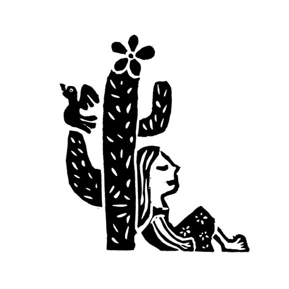
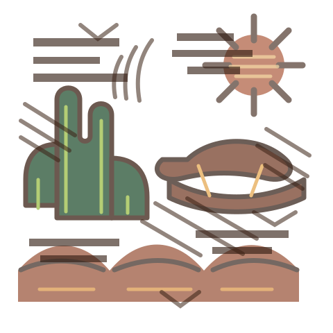

Carne de sol acebolada
Carne de panela
Charque desfiada
Frango desfiado
Bode guisado
Comida brasileira e regional no Recife Antigo, com sabores de cuscuz, macaxeira, carne de sol, sucos e almoço de sertão.
Monte o prato navegando pelas ilhas do buffet: carnes, bases, guarnições, saladas e acompanhamentos.
Carne de sol acebolada
Carne de panela
Charque desfiada
Frango desfiado
Bode guisado
Cuscuz nordestino
Macaxeira cozida
Inhame
Batata doce
Arroz branco
Feijão
Farofa
Macarrão
Purê
Vinagrete
Salada do Empório
Salada sertaneja
Porção de salada
Frutas frescas
Legumes do dia
Ovo frito / cozido
Porção de queijo
Porção de torrada
Batata palha
Bacon
Cuscuz, macaxeira, inhame, batata doce, tapioca e caldos com recheios sertanejos.


Restaurante Empório do Sertão LTDA
Rua da Guia, 171 - Recife - PE
(81) 99732-5955 | (81) 3097-8931
81 3097-8931
50.474.870/0001-70
Comida Brasileira